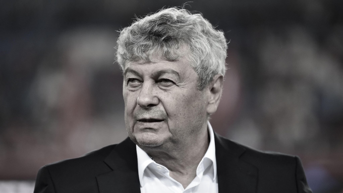

Mỹ – Iran đạt thỏa thuận về ngừng bắn, mở cửa eo biển Hormuz trong hai tuần
Mỹ và Iran đồng ý ngừng bắn trong hai tuần, Tehran sẽ cho phép tàu thuyền đi qua eo biển Hormuz trong thời gian này "với sự điều phối từ lực lượng vũ trăng".
"Lucescu là một trong những cầu thủ và HLV giàu thành tích nhất lịch sử Romania. Ông là người đầu tiên đưa ĐTQG lọt vào vòng chung kết Euro, năm 1984. Nhiều thế hệ người dân Romania đã lớn lên với hình bóng ông trong tim như một biểu tượng quốc gia. Cầu Chúa phù hộ cho ông!", thông cáo từ Bệnh viện Đại học Bucharest có đoạn. Lucescu qua đời ở tuổi 80, chỉ vài ngày sau khi rời ghế HLV trưởng Romania. Trước đó, chỉ trong vài giờ sau khi từ chức, nhà cầm quân này trải qua hai cơn nhồi máu cơ tim liên tiếp. Tính từ tháng 12/2025, ông đã phải nhập viện ba lần.

Được mệnh danh là "Il Luce" (Ánh sáng) để tôn vinh tư duy chiến thuật tài ba, Lucescu có được vị thế tượng đài của bóng đá Romania suốt nhiều thập kỷ, dù sống trong môi trường thể thao đầy rẫy áp lực và biến động. Ở mọi nơi từng đi qua, ông luôn để lại dấu ấn sâu đậm, đặc biệt là trên băng ghế huấn luyện. Sinh ngày 29/7/1945 tại Bucharest trong những ngày cuối cùng của Thế chiến thứ hai, Lucescu dành phần lớn sự nghiệp quần đùi áo số ở Dinamo Bucharest. Với nhãn quan sắc sảo ở vị trí tiền đạo cánh phải, ông đã thi đấu hơn 250 trận, giành 7 chức VĐQG và hai Cup Quốc gia Romania.
Với ĐTQG, ông đá 70 trận và mang băng thủ quân tại World Cup 1970, đánh dấu sự trở lại của Romania sau 32 năm. Ở giải đấu trên đất Mexico năm đó, Lucescu đã có khoảnh khắc đổi áo để đời với huyền thoại Pele, mà về sau ông khẳng định là chưa bao giờ giặt chiếc áo ấy.
Lucescu bắt đầu cầm quân từ năm 1979 tại Corvinul Hunedoara trong vai trò cầu thủ kiêm HLV. Hai năm sau đó, ông được bổ nhiệm làm HLV tuyển Romania và nhanh chóng giúp đội nhà lần đầu góp mặt tại một kỳ Euro, năm 1984. Chính giai đoạn này, Lucescu đã trình làng cậu thiếu niên 18 tuổi Gheorghe Hagi, người sau này trở thành cầu thủ vĩ đại nhất lịch sử Romania, khoác áo cả Real Madrid lẫn Barca. Lucescu tại vị đến năm 1986, đặt nền móng vững chắc giúp Romania góp mặt trong ba kỳ World Cup liên tiếp là 1990, 1994 và 1998, cũng như các kỳ Euro 1996 và 2000.
Lucescu bắt đầu cầm quân từ năm 1979 tại Corvinul Hunedoara trong vai trò cầu thủ kiêm HLV. Hai năm sau đó, ông được bổ nhiệm làm HLV tuyển Romania và nhanh chóng giúp đội nhà lần đầu góp mặt tại một kỳ Euro, năm 1984. Chính giai đoạn này, Lucescu đã trình làng cậu thiếu niên 18 tuổi Gheorghe Hagi, người sau này trở thành cầu thủ vĩ đại nhất lịch sử Romania, khoác áo cả Real Madrid lẫn Barca. Lucescu tại vị đến năm 1986, đặt nền móng vững chắc giúp Romania góp mặt trong ba kỳ World Cup liên tiếp là 1990, 1994 và 1998, cũng như các kỳ Euro 1996 và 2000.
Lucescu thiết lập kỷ luật trong các tập thể dưới quyền không dựa trên sự sợ hãi, mà bằng sự tôn trọng. Đây là triết lý đưa ông trở thành một trong những HLV xuất sắc và được nể trọng nhất lục địa già. "Bất kỳ ai có thái độ tiêu cực đều không có chỗ trong đội của tôi", ông từng nói trên báo Tây Ban Nha El Pais. "Quan niệm về kỷ luật của tôi là đối thoại. Tôi không phạt tiền cầu thủ, tôi nói chuyện với họ một lần, hai lần rồi ba lần. Tôi muốn có tiếng nói cuối cùng trong việc chuyển nhượng và tôi tìm kiếm những người có cá tính, sự thông minh và tinh thần trách nhiệm. Về khâu chuẩn bị, nhiều người huấn luyện bằng các bài tập, còn tôi huấn luyện bằng các nguyên tắc".
Sau khi xây dựng một tập thể Dinamo Bucharest thống trị các giải quốc nội giai đoạn 1985-1990, Lucescu sang Italy thử sức tại Pisa, Brescia, Reggiana và cả Inter Milan. Ở đó, ông không chỉ mang về kết quả mà còn để lại một tư duy chơi bóng hiện đại. Chính Lucescu đã đôn Andrea Pirlo lên từ đội trẻ khi anh mới 15 tuổi và cho tiền vệ này ra mắt Brescia ngày 21/05/1995. Sau này, trong cuốn tự truyện Penso quindi gioco (Tôi tư duy, nghĩa là tôi chơi bóng), Pirlo miêu tả Lucescu như một người thầy vĩ đại.
Tại Brescia, Lucescu gắn bó suốt 5 mùa giải, và đến giờ, người hâm mộ nơi đây vẫn tôn sùng ông. Họ yêu quý ông không chỉ vì triết lý bóng đá mà còn bởi tính cách tinh quái, sắc sảo đầy thú vị. "Ông ấy là HLV lý tưởng cho bất kỳ CLB nào muốn kiếm tiền, vì Lucescu là bậc thầy trong việc biến những cậu nhóc tiềm năng thành các ngôi sao thực thụ. Không ai có thể so sánh với ông ấy, bởi Lucescu vừa đào tạo trẻ giỏi, vừa đảm bảo được thành tích, điều vốn dĩ không hề bắt buộc khi làm việc với các cầu thủ trẻ", cố Chủ tịch Brescia Gino Corioni và cũng là bạn thân của Lucescu, từng kể.

Mỹ và Iran đồng ý ngừng bắn trong hai tuần, Tehran sẽ cho phép tàu thuyền đi qua eo biển Hormuz trong thời gian này "với sự điều phối từ lực lượng vũ trăng".

Người dân Iran tập trung trên đường phố Tehran, vậy có và hô khẩu hiệu sau khi lệnh ngừng bắn hai tuần với Mỹ được công bố.

Nằm ở bộ nam eo biển Hormuz, cách Iran gần 34 km, bán đảo Musandam của Oman đang chứng kiến những hệ lụy về kinh tế và đời sống khi xung đột bùng phát.